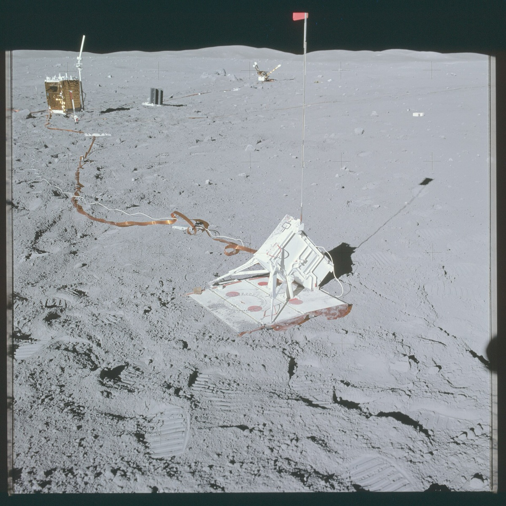

Did the ground shake?
ILSA, a seismometer on the lander, can feel a millionth of Earth's gravity: a micro-g, written µg. Its team listed every signal it picked up and, where they could, the cause: the rover driving, an instrument at work, or nothing they could find.

Apollo 16's instruments in 1972. Apollo's seismometers listened to the Moon until 1977; ILSA is the first at its south pole.
| Time (UTC) | Cause | Shaking over 2½ minutes | Peak | Listen |
|---|
Each row is one signal. The line traces how hard the ground shook, from 30 seconds before the listed start to two minutes after. Press play to hear it, sped up 60 times so it falls in the range of your ears.
The whole mission. Each stem is one signal, taller for stronger shaking (each grid line is ten times the one below). Hollow marks: the archive has no seismometer data for that time. Tap a day to jump to it.
How hot was the soil?
ChaSTE pushed a 10 cm probe carrying ten thermometers into the ground. The chart draws one line per day: the temperature at each depth, from just under the surface at the top to 10 cm down at the bottom.
Lunar soil is loose powder with no air between the grains, so heat barely travels through it. That is why a few centimetres make such a difference.
What is the soil made of?
At each stop the Pragyan rover lowered an X-ray instrument, APXS, over the ground for about an hour. Each element gives off X-rays of its own energy. The bars compare this stop with the average of all 23 stops: a bar near the centre line means this patch matches the rest.
Lunar soil up close: a bootprint from Apollo 11, 1969.
What was above the ground?
The Moon has almost no air, but sunlight knocks electrons loose from the surface and leaves a very thin plasma. RAMBHA-LP, a probe on the lander, measured how hot those electrons were and how many there were.
Two-hour medians across the mission; the gold band is the day you picked. The first two days read hotter than later ones and than published values, which isn't explained yet.